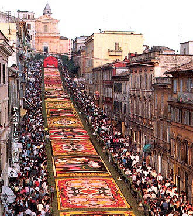

La festa risale al XVIII secolo, allorché venne allestito un tappeto floreale lungo la via Sforza (ora Via Bruno Buozzi) di Genzano.
In precedenza, a Genzano, e verosimilmente in altre località dei Castelli Romani, esisteva da tempo imprecisato la consuetudine di preparare tappeti di fiori in occasione della festa del Corpus Domini.
La tradizione era nata a Roma nella prima metà del XVII secolo ed era stata adottata nelle località dei Colli Albani probabilmente per gli stretti legami di questo territorio con Gian Lorenzo Bernini, il principale artefice di feste barocche.
Si ritiene, infatti, che la tradizione di creare quadri per mezzo di fiori fosse nata nella basilica vaticana[3] ad opera di Benedetto Drei, responsabile della Floreria vaticana, e di suo figlio Pietro.
I quali avevano usato "fiori frondati e minuzzati ad emulazione dell'opere del mosaico" il 29 giugno 1625, festa dei santi Pietro e Paolo, patroni di Roma.
Pochi anni dopo, nel 1633, un altro quadro floreale venne realizzato da Stefano Speranza, uno stretto collaboratore del Bernini.
Oreste Raggi informa che, morto Benedetto Drei, fu proprio Bernini a succedergli, e che "da Roma quest'arte si divulgò